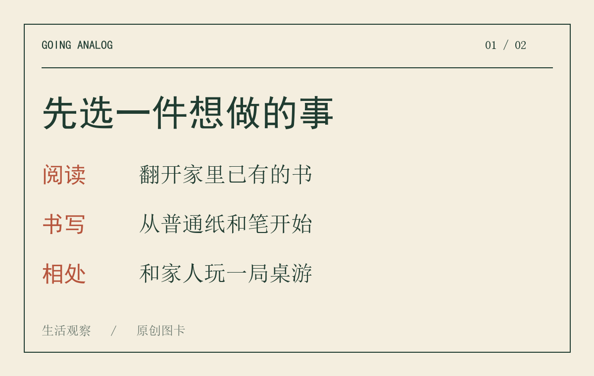
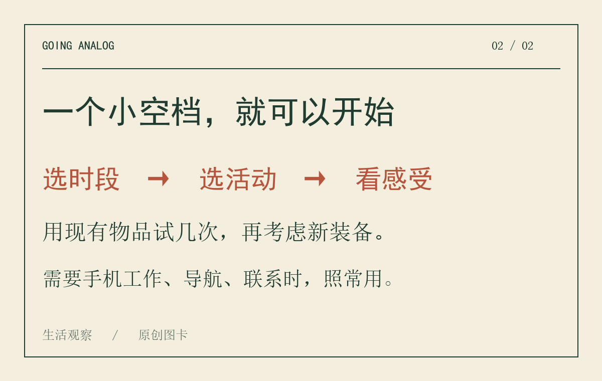

下班后本来只想看两分钟手机，再抬头，一段难得的空闲已经过去。对于熟悉这种场景的人，海外今年反复出现的一个词并不难理解：Going Analog。
这个说法大致指向一种选择：让生活里多一些不依赖屏幕的活动。读纸书、手写记录、玩桌游，都可以算在其中。它没有统一的入门标准，也不需要先买一整套复古设备。
2026年2月17日，《卫报》刊登了专栏作者Tayo Bero的评论。她谈到自己重新使用纸质媒介的体验，包括剪贴、手写和实体书。那是一位作者的个人观察，不能当作所有年轻人的生活写照。
到了9月21日，美国KPLC电视台也以Going Analog为题报道这股潮流，介绍了阅读、桌游、涂色和不看手机的散步等活动。两篇时间相隔数月的内容，说明“给生活留一点离线时间”在今年持续进入海外媒体的讨论。
不过，媒体关注不等于人人都在参与，更不能据此说人们已经集体告别智能手机。对普通读者来说，值得讨论的是这股潮流提供了什么可用的办法。

纸书和手账的吸引力，很容易被拍成一幅漂亮的画面：暖色灯光，摊开的本子，一杯咖啡。这样的画面适合传播，但实际生活未必需要这套布置。
一本旧书也可以读。随手拿来的纸也可以写。饭后和家人玩一局家里已有的桌游，同样是一段完整的相处时间。
我的看法是，离线活动最实用的地方，在于给空闲安排一个具体去处。只说“今晚少刷一点”，到了空闲时，仍然不知道该做什么；如果提前选好“把这几页读完”，开始就容易一些。
这是一种生活安排上的建议，并不意味着纸质媒介天然更高级。电子书也能认真读，手机也承载着工作和联系。选择哪种形式，要看它是否适合眼下这件事。
如果每看到一种新生活方式，就先列购物清单，离线生活也可能变成一轮消费。买相机之前研究参数，买手账之前比较纸张，买唱片之前挑设备，几晚过去，真正想做的事还没开始。
这些爱好本身没有问题。问题在于，你想要的是摄影、书写、听音乐，还是想拥有那张看起来很从容的生活照片？两个愿望可以同时存在，但花钱之前，最好分清。
一个简单的办法，是先用现有物品做几次。真的喜欢拍照，再考虑相机；确实愿意写，再挑喜欢的本子。让购买跟在兴趣后面，通常比让装备替自己启动兴趣更稳妥。
如果想试，可以选晚饭后的一小段时间，先安排15分钟。这个时长只是便于开始的例子，没有特别的科学含义。
把手机放到不顺手就能拿到的位置，同时保留必要的来电联系。选一件小事：读几页书、写下明天要做的事、和家人下一局棋。尽量选你原本就有兴趣的活动，别为了跟潮流硬找一个爱好。
结束以后，也不用打分。只想一想：这段时间舒服吗？还想继续吗？如果惦记工作消息，就换个时段；如果觉得太长，就缩短。需要手机导航、支付或联系家人时，照常使用。

这里有一个常见的绕路：为了开始离线生活，先刷半小时“别人如何离线”的视频。如果你已经知道今晚想做什么，就可以把教程停在那里了。
一股流行风潮能留下什么，最终还是看它能否进入普通的一天。对我来说，Going Analog里最值得保留的建议很朴素：在一段空闲开始前，先选好自己想做的事。
今晚如果有这样一段空闲，你会把它留给什么？
资料来源：
1. The Guardian，2026-02-17，Tayo Bero署名评论《Analog is back, and my millennial heart couldn’t be happier》。 2. KPLC，2026-09-21，Dara Layton报道《The online trend of getting offline: Going analog》。
资料核对截至2026年11月5日。文中尝试方法为编辑建议，不是健康效果承诺。信息图为原创绘制，内容经AI辅助整理与人工核对。